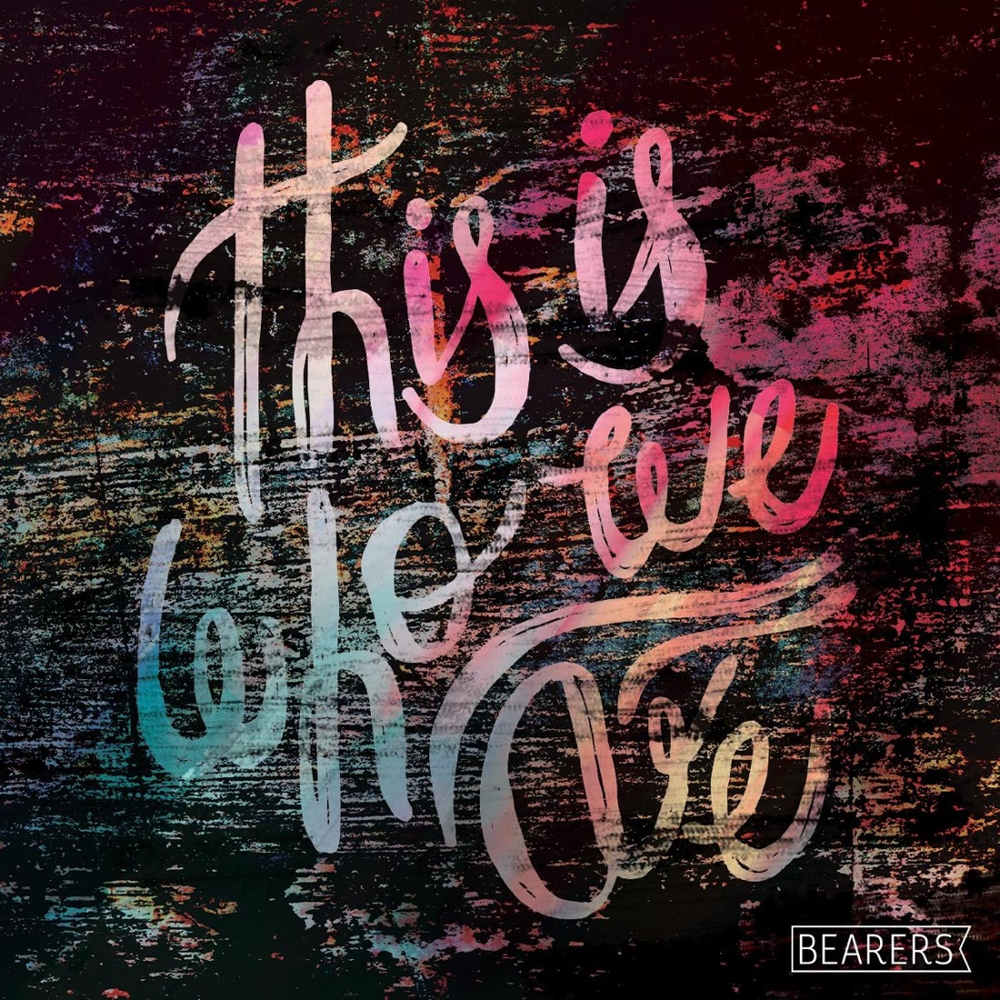

← All work
Bearers
Three records of worship written with young Salvationists and released between 2016 and 2018.

At a glance
What they needed
A place for worship written by the movement’s own young people, in their own sound.
What I did
I came up with the project, then co‑wrote, recorded and produced the music.
What changed
Young Salvationists wrote and fronted the record themselves, and it was launched live at the Now is the Time congress in Wellington.
Songs looking for somewhere to go
At the Army’s Amplify creative arts camps, the same thing kept coming up: young songwriters with real songs and nowhere to take them.
I ran Bearers from inside The Salvation Army’s Creative Ministries Department.
6
young Salvationist writers got in a room together, and the songs kept coming back to identity.
Three records
- This Is Who We Are, 2016A five-track EP, an upbeat pop-rock record made to reach beyond the Army’s own walls.
- DefinedThe second record, an EP.
- Home, 2018The full-length album.